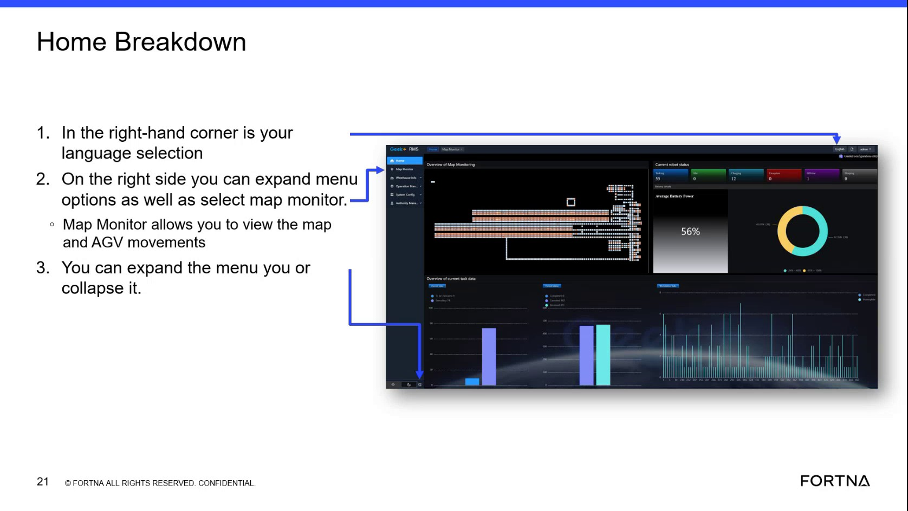

| Procedure ID | proc_expand_the_rms_sidebar_and_open_map_monitor_v1 |
|---|---|
| Title | Expand the RMS Sidebar and Open Map Monitor |
| Procedure Type | operation |
| Primary Role | operator |
| Support Safe | Yes |
| Validation Status | needs_sme_review |
| Merge Status | source_finalized |
Use the RMS sidebar menu to access the Map Monitor screen. The source describes the sidebar as sometimes hidden, explains that it can be expanded or collapsed, and identifies Map Monitor as the second menu option and a primary workspace for viewing the map and AGV movements.
Use this procedure when navigating within the RMS application to reach the Map Monitor screen from the RMS home or navigation screen, especially when the sidebar menu is hidden.
Responsible role: operator
Instruction:
Look at the RMS screen and determine whether the sidebar menu is currently hidden or already visible.
Expected result:
The current sidebar state is identified.
Screens / Images:

Stop or Escalate If:
Responsible role: operator
Instruction:
If the menu is hidden, click the menu expand control referenced in the source to expand it.
Expected result:
The sidebar menu becomes visible in its expanded state.
Screens / Images:
Stop or Escalate If:
Responsible role: operator
Instruction:
In the expanded sidebar, locate the second option labeled Map Monitor.
Expected result:
The Map Monitor menu option is identified in the sidebar.
Screens / Images:
Stop or Escalate If:
Responsible role: operator
Instruction:
Select Map Monitor.
Expected result:
The system begins opening the Map Monitor view.
Screens / Images:
Stop or Escalate If:
Responsible role: operator
Instruction:
Verify that the Map Monitor view opens and shows the map and AGV movements.
Expected result:
The Map Monitor screen is open and the user can view the map and AGV movements.
Screens / Images:
Stop or Escalate If: